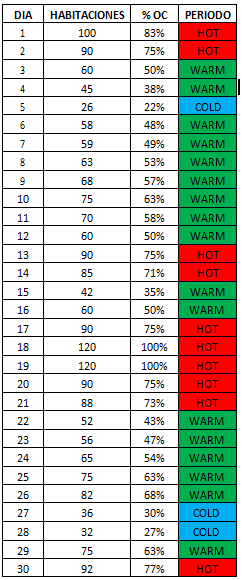

Pretende establecer las previsiones de ocupación a partir de los datos históricos observados. Para ello, se establecerá un cuadro de demanda que permita establecer los picos altos, medios o bajos de demanda. El objetivo será determinar una estrategia de precios que sirva como estructura tarifaria. Veremos a la izqyuierda un ejemplo para un hotel de 120 habitaciones.

En este caso, se han considerado, al formular la estrategia de precios, tres variables:
- PERIODO COLD: Cuando la ocupación prevista no alcanza el 30 %.
- PERIODO WARM: Cuando la ocupación prevista se sitúa entre el 31 y el 70 %.
- PERIODO HOT: Cuando la ocupación prevista.
Este cuadro debe invitarnos a tomar decisiones. En periodos HOT o de alta demanda:
- Restringir, o incluso cerrar descuentos a clientes.
- Aplicar criterios de “mínimum length stay”, lo que se traduce en la obligación de reservar bloques de noches y no una sola noche.
- Reducir la demanda de grupos, o calcular la contribución necesaria correctamente.
- Tratar de garantizar las reservas o reducir la hora de llegada para su garantía.
- Elevar las tarifas, aplicando las BAR más altas.
En periodos COLD o de baja demanda:
- Realizar ofertas y programas de oferta determinados.
- Mantener descuentos y atender a la mayor cantidad de segmentos.
- Ofrecer incentivos.
- Eliminar restricciones y fomentar descuentos a clientes.
- Reducir las tarifas, aplicando las BAR más bajas.
- Fomentar el uso de upselling y crossselling
Pero lo que hemos hecho hasta ahora no deja de ser un sencillo cuadro de demanda donde disponemos de alguna información, que debemos trasladar u obtener de nuestro calendario de demanda.
El CALENDARIO DE DEMANDA es un instrumento que debemos consultar y mantener actualizado cada día para obtener la información tan relevante que nos aporta.
Sus datos deben ser fiables y comparables, por lo que lo realizaremos, no siguiendo el día del mes, sino el día de la semana, es decir, esta semana compararemos el sábado con el sábado de la misma semana del año anterior:
- Deben ser FIABLES porque serán los datos que empleemos para realizar las previsiones.
- Deben ser COMPARABLES porque no tiene sentido comparar fechas con una relevancia, por ejemplo por la existencia de un evento, con otras que no laposeen.
Además, debemos tener en cuenta que no existe una metodología única para crear este documento, sino que podemos adaptarlo a nuestras propias necesidades.
A continuación veremos el calendario de demanda a 21 días de la fecha de comienzo del mes, tal y como se ha confeccionado el cuadro anterior: